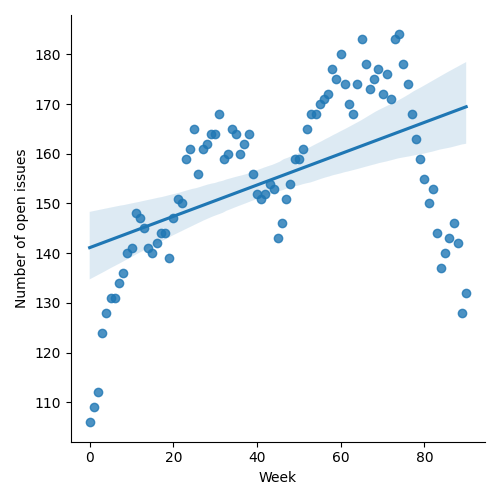
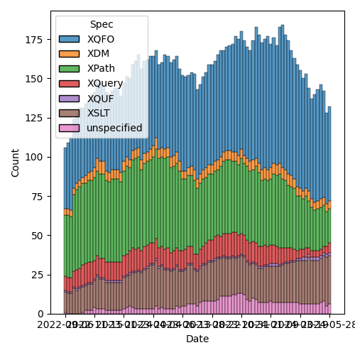
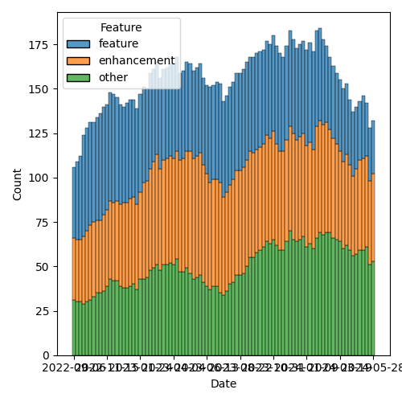

QT4 CG Meeting 080 Minutes 2024-06-04
Table of Contents
Meeting index / QT4CG.org / Dashboard / GH Issues / GH Pull Requests
Draft Minutes (day 1 of 2)
Summary of new and continuing actions [0/15]
[ ]QT4CG-063-06: MK to consider refactoring the declare item type syntax to something like declare record[ ]QT4CG-077-03: MK to add a note about document order across documents[ ]QT4CG-077-04: MK to review inconsistencies discovered in review of #1117[ ]QT4CG-078-01: MK to make the default for normalize-newlines backwards compatible.[ ]QT4CG-079-01: WP to seek expert advice on hashing functions.[ ]QT4CG-080-01: NW to add what the DocBook stylesheets do for this function[ ]QT4CG-080-02: NW to fix issue classification so PR #1181 isn’t misclassified as an XSLT issue[ ]QT4CG-080-03: MK to make a separate issue for @as on xsl:value-of[ ]QT4CG-080-04: NW to revise p:invisible-xml[ ]QT4CG-080-05: NW to add absolute property to the parse-uri output[ ]QT4CG-080-06: NW to investigate the cross-spec reference errors in the build[ ]QT4CG-080-07: NW to update the build instructions in the README[ ]QT4CG-080-08: MK to work out what happened to his next-match PR[ ]QT4CG-080-09: MK to address comments made on PR #832[ ]QT4CG-080-10: NW to find out if we can change the community group name
1. Administrivia
1.1. Roll call [4/12]
[ ]Reece Dunn (RD)[ ]Sasha Firsov (SF)[ ]Christian Grün (CG)[ ]Joel Kalvesmaki (JK)[X]Michael Kay (MK)[X]Juri Leino (JLO)[ ]John Lumley (JLY)[ ]Dimitre Novatchev (DN)[ ]Wendell Piez (WP)[X]Ed Porter (EP)[ ]C. M. Sperberg-McQueen (MSM)[X]Norm Tovey-Walsh (NW). Scribe. Chair.
1.2. Accept the agenda
Proposal: Accept the agenda.
Accepted.
1.2.1. Status so far…

Figure 1: “Burn down” chart on open issues

Figure 2: Open issues by specification

Figure 3: Open issues by type
1.3. Approve minutes of the previous meeting
Proposal: Accept the minutes of the previous meeting.
Accepted.
1.4. Next meeting
The next meeting is scheduled for tomorrow.
The meeting after that is 11 June.
EP may give regrets.
1.5. Review of open action items [1/6]
[ ]QT4CG-063-06: MK to consider refactoring the declare item type syntax to something like declare record[ ]QT4CG-077-03: MK to add a note about document order across documents[ ]QT4CG-077-04: MK to review inconsistencies discovered in review of #1117[ ]QT4CG-078-01: MK to make the default for normalize-newlines backwards compatible.[X]QT4CG-078-02: MK to update the prose oftransient{}to use the word “should”.[ ]QT4CG-079-01: WP to seek expert advice on hashing functions.
2. Technical Agenda
2.1. Make the agenda
- Triage the open issues
- Discuss open PRs
- Planning
2.2. Review the issues
- NW: Triage into groups:
- easy/hard
- required/optional
Optional = if we don’t get a PR, it doesn’t stop us from finishing
In the course of review, we found several clusters of issues. We mostly marked those “revisit”. They appear at the end of the minutes along with any discussion we actually had about them.
2.2.1. 37, support sequence, array, and map destructuring
- MK: The devil is in the details and there are a lot of details
- … Including in the grammar
- JLO: I’d like to have this
Some discussion of whether this is mostly about maps.
- MK: I’m unsure about doing this for arrays
- … It just saves a few keystrokes
Some discussion of how it would work with maps.
- MK: This capability is for the use case where the keys are known at compile time.
- JLO: We could limit it to record destructuring?
- MK: Yes, but that’s not really a datatype
- … You could restrict it to just keys that are NCNames or QNames…but which is it?
“Hard”/”Optional”
2.2.2. 46, xsl:sequence: @as #46
- MK: I’m torn about whether this is desirable or not
“Easy”/”Optional”
2.2.3. 69, fn:document, fn:function-available: default arguments #6
- MK: I think this is a bit out of date.
- … Generally, I think there’s a need to reflect some of the changes we’ve made to the standard function library to make corresponding changes for the XSLT defined functions.
There’s no conceptual difficulty, it’s just legwork.
“Optional”/”Easy”
2.2.4. 75, Support processing HTML 5 template element content
We wish RD was here to explain HTML templates.
- JLO: The content of the template element isn’t visible in the DOM. It’s used for instantiating something
Some attempt to understand the meaning of a template element.
- JLO: It’s used when creating new instances.
- MK: If this is an HTML feature, users will want to be able to create them
through the HTML serialization method.
- … If the parse-html function does something special, does it round-trip?
“Revisit”
2.2.5. 76, non-deterministic time
- MK: It’s fairly easy if you just wave your hands about the implementation
- … My anxiety is that someone is going to use it for timing things, then it gets tied in with things like lazy evaluation.
- NW: Or have some functions that you aren’t allowed to lazily evaluate?
- MK: The xsl:message instruction is like that, it just leaves it to
implementations to do what makes sense
- … But at the XPath level, it’s a lot more complicated
- MK: You could do it in pure code by having a monitor function (scribe: as
shown in the comment in the issue)
- … No, that won’t work! It would evaluate the function before it started!
- MK: The other way to do it is just with a system date-time function with a note to implementors that it’s useful to evaluate this eagerly.
2.2.6. 77, Allow manipulation of maps and arrays
PR pending.
2.2.7. 92, Simplify rule for attribute values on Extension Instructions used to invoke named templates
- MK: I don’t think I want to do this. I prefer the spec as written.
- Extension elements generally have boolean attributes, string attributes (usually AVTs), or expressions (typically @select).
“Revisit”
2.2.8. 105, Maps with Infinite Number of Keys: Total Maps and Decorated maps
- MK: This is a hybrid of sorts between maps and functions.
- … I think this is too difficult.
“Hard”/”Optional”
2.2.9. 106, Decorators’ support
One angle here is dynamic function calls taking keyword arguments that’s popped up in several places.
After half an hour spent reviewing the proposal, the chair proposed we mark it hard and optional.
”Hard”/“Optional”
2.2.10. 108, Template match using values of [tunnel] parameters
”Hard”/“Optional”
2.2.11. 111, FLWOR tracing
Close with no action.
2.2.12. 148, Get the type of a value
- JLO: The biggest problem seems to be “what is the type of a value”? Is it integer or decimal?
- MK: The type system is such a mess
- But atomic values clearly have a type label. A function can return that.
- There’s one complication, what to do if it is an anonymous type.
- (If you evaluate against a schema with an anonymous type.)
- One solution would be the nearest type up the hierarchy that has a name
- There’s one complication, what to do if it is an anonymous type.
- Nodes have a well defined kind. There’s also a “content annotation”, an
element validated against a type might be a “part number”, for example.
- We could define a function that returned “element and part number”
- But atomic values clearly have a type label. A function can return that.
Some discussion of nodes. You might also want to get the element name.
- MK: Not many people write schema-aware XSLT or XQuery code.
- It’s just a pain to start with.
Returning to the discussion.
- MK: The real problem is what to do with functions, and arrays, and maps. They don’t have an intrisic type. An empty map belongs to an infinite number of types.
- JLO: But an empty map is “map(*)”!
- MK: For all maps, arrays, and functions, you could say all you get back is that it’s one of those.
- JLO: That would be good, but you could also look into the map or array.
- Both BaseX and in my own hack of that function, do introspection.
- MK: I’ve no problem that it’s useful. It was defined by EXSLT for 1.0 very
quickly.
- … There’s plenty of evidence that it’s needed, it’s just the detail.
- MK: The other question is what kind of result do you return?
- Type, in principle, should be first class objects, but that’s a big step in terms of the data model.
- JLO: All of the existing versions get you strings. But it could be an enum.
- MK: I think you want it to be a structured result.
- NW: A record with an optional qname type and an option node kind?
- MK: Yes, I think that would be more useful than a string you have to parse.
If we limit the scope to just saying map, array, or function does that make it easy?
“Hard”/”Optional”
2.2.13. 150, fn:ranks: Produce all ranks in applying a function on the items of a sequence
PR pending.
2.2.14. 158, Support optional parameters on dynamic functions
There are a bundle of things in this area that we keep coming back to by other routes.
- MK: We’ve done some of this in the function coercion rules.
“Revisit”
2.2.15. 168, XSLT Extension Instructions invoking Named Templates
- MK: I think we’ve made this part of the status quo, but we don’t want to lose Jirka’s proposal for an extension.
We’ve asked Jirka to open a new issue for his extension.
Close this issue without further action.
2.2.16. 266 Add an option on xsl:copy-of to copy a subtree with a change of namespace
- MK: Back in the age of 4GLs this was called a stereotype. There’s a general
feature but it’s too complex for this use case. How do you define the
boundaries?
- … One of the motivations for this is that copy-namespaces="no" doesn’t do what users expect.
- … There are all sorts of degrees of elaboration possible.
- JLO: If I wanted tei:p output as html:p what would I do?
- MK: You’d have to write a mode with a single template rule that matches all elements and changes the namespace.
- NW: It’s certainly optional, do we want to keep it?
- MK: Let’s abandon it.
2.2.17. 269, Function for URI relativization
- NW: It looks like defining the behavior is the tricky part.
- MK: Nothing to do with URIs is easy!
ACTION: QT4CG-080-01: NW to add what the DocBook stylesheets do for this function
“Optional”/”Easy”
2.2.18. 272, Setting parameter values in xsl:use-package
- MK: There are a number of issues with packages introduced in 3.0.
- … There are only a few people using them in anger, but they’re the one’s finding issues.
- … It would be nice to have more feedback.
- … Certainly one issue is that packages can take parameters (particularly static parameters). If you write a package that has a parameter that’s the localization attributes and you then want to versions of that package in a stylesheet with different localization attributes, there’s no way to do that.
“Required”/”Hard”
2.2.19. 285, Stability of collections
There are a group of issues related to transiency
“Revisit”
(We’ve come back to this issue on the afternoon of the second day).
- JLO: CG has a point about collection and doc being different.
- MK: Yes, except pragmatically, in our experience, people read the same
document many times but rarely read the same collection more than once.
- … But maybe that’s not the case in other environments
- … CG says he imagines doing collections over database and filestores differently.
Is it a database or filestore is one dimension. What’s the duration of an execution scope is another. If an execution scope is republishing a suite of documents, then you really don’t want be holding onto the whole collection.
- MK: A common use case is to process the documents in the collection one at a time. It’s such horrible overhead to hold all of the documents just in case you come back to that collection again.
- NW: It sounds like we might get consensus to relax the requirement.
This is related to the question of transiency because a transient block or something like that would give the user the appearance of control.
Some discussion of how database and filesystem access differs.
- MK: The issue quotes the existing text. The transient proposal doesn’t change
that. The transient proposal gives the user an interoperable way of switching
that off but it doesn’t change the default.
- … For our user base, I think the default is wrong.
- JLO: So what we want is an interoperable way to specify that.
- EP: Would it be reasonable to change the default for XPath and not XQuery?
- MK: We could say that the implementation must provide an option for it to be deterministic but that doesn’t have to be the default.
Some discussion of the use of an options parameter. That’s not necessarily something you can know statically, but certainly the 99% case is that it will be a literal!
2.2.20. 296, Default namespace for elements; especially in the context of HTML
ACTION: QT4CG-080-02: NW to fix issue classification so PR #1181 isn’t misclassified as an XSLT issue
Some discussion of PR #1181 which addresses this issue.
PR pending
2.2.21. 305, parse-xml() and whitespace stripping
- MK: The whole implicit context dependencies of some functions is very worrying. The fact that strip-space and preserve-space apply globally is very unsatisfactory.
Some discussion
- MK: These need to be options parameters on the functions (parse-xml, doc, etc.)
“Required”/”Hard”
2.2.22. 322, Map construction in XSLT: xsl:record instruction
- NW: Looks useful to me.
“Optional”/”Easy”
2.2.23. 323, add select attribute to xsl:text
Some discussion of the fact that xsl:sequence isn’t intuitive but
xsl:value-of returns a text node.
MK’s response in this issue is a separable issue. It’s a tangent.
ACTION: QT4CG-080-03: MK to make a separate issue for @as on xsl:value-of
With respect to @select on xsl:text, it’s hard to argue against.
“Optional”/”Easy”/
2.2.24. 332, Add a namespace uris option to fn:path
This seems to have garnered some support.
“Optional”/”Easy”/
2.2.25. 350, CompPath (Composite-objects path) Expressions
We’ve done some of this in other ways, or in other open PRs. Needs to be revised in light of the current language.
“Optional”/”Hard”
2.2.26. 366, Support xsl:use-package with xsl:package-location
- MK: One school of thought says that locating packages should be outside the core language. You should be able to configure where they come from without changing your source code. OTOH, we know from Query and Schema that it’s much more convenient to say where they come from inline.
“Optional”/”Easy”
2.2.27. 374, Can't view the XSD for XSLT in the browser
Build issue. Let NW fix it.
2.2.28. 379, Namespace handling in parse-html
Duplicate of 296, close with no further action.
2.2.29. 402, XSLT patterns: intersect and except
- MK: I think the proposal is to break the way it’s currently defined.
- … In the cases where it’s changing it, the existing behavior is almost certainly not what the user intended.
“Optional”/”Easy”
Some consideration of what it means in stylesheets with other versions. Might we just consider it a bug fix?
2.2.30. 407, XSLT-specific context properties used in function items
- MK: We have a catch-all issue that streamability of 4.0 hasn’t been addressed.
“Required”/”Easy”
2.2.31. 421, Make sure the build system syntax checks the syntax of examples
Build issue.
- MK: In the 3.x builds, we had a role for examples that caused them to be syntactically validated.
2.2.32. 451, Multiple Schemas
- MK: We allow modules to use different schemas if they’re compatible
- … And the spec is clearer about error conditions
- … We don’t have the ability to import incompatible schemas and validate against them separately.
“Optional”/”Hard”
MK observes that part of this is now possible, you can have incompatible schemas in use provided you don’t refer to them from your query.
2.2.33. 490, Control over schema validation in parse-xml(), doc(), etc.
Like #305, this is about options on parse-xml, doc, etc.
“Required”/”Hard”
2.2.34. 501, Error handling: Rethrow errors; finally block
- MK: Not too difficult now that we have error maps.
“Required”/”Hard”
2.2.35. 523, Dealing with component name conflicts with library packages
- MK: Override with visibility hidden seems to be the same as accept with
visibility hidden.
- … Perhaps this is “existing callers, use this version, but I don’t want to call it from my package.”
- Java doesn’t give you private overrides, do we really need this?
- MK: I can see the need for accept with alias, but is that really needed often enough to justify?
- JLO: That seems sensible enough to me, it’s “import as”.
“Optional”/”Hard”
2.2.36. 528, fn:elements-to-maps (before: Review of the fn:json() function)
PR pending, but the PR is out of date and there are open actions to change it.
2.2.37. 540, Add fn:system-property() to XQuery
This seems to have garnered some support.
“Optional”/”Easy”
2.2.38. 557, fn:unparsed-binary: accessing and manipulating binary types
Superseded by #1127, close without further action
2.2.39. 564, Sorted maps
- MK: Might involve a data model change, that’s always difficult.
“Optional”/”Hard”
2.2.40. 566, fn:parse-uri, fn:build-uri: Feedback
PR pending
2.2.41. 573, Node construction functions
- MK: I wanted to do it for two reasons: it’s useful to be able to use
functions, and also to make it possible in XPath rather than only XSLT and
XQuery.
- … CG asks why not move the XQuery syntax into XPath
- … I don’t like that partly because it only solves one of the problems, not the other
- … From an XSLT perspective, wanting to keep the XPath grammar small
- NW: I predict it will be difficult to get consensus
Some discussion of whether it should be an extension; but users don’t tend to use extensions if there’s another way.
“Revisit”
2.2.42. 576, JSON serialization: Sequences, INF/NaN, function items
- NW: It does seem bad that serialization and items-to-json behave differently.
Some discussion of the streamability consequences of serializing a sequence as an array.
- MK: We’re revisiting items-to-json anyway.
“Revisit”
2.2.43. 583, (array|map):replace → *:substitute or *:change
- MK: My last comment is to scrap the functions and go with the update syntax
“Revisit” after the PR on update syntax.
2.2.44. 641, Serialization fallback.
Related to #576, marked revisit.
“Revisit”.
(We’ve come back to this issue on the afternoon of the second day).
- MK: A common error is that you can’t use a map in document content. The proposal is that instead of telling you that, it gives you a document that contains a representation of that map.
- NW: What about the streaming problem?
- MK: We could have an extra serialization parameter “serialize sequence as array”.
- NW: And what’s the default?
Some discussion of streaming. This isn’t specifically about XSLT streaming, it’s about the fact that serializers often work “on the fly”.
- MK: A JSON serializer would have to look ahead to find out if the top-level item was a sequence. So it’d have to buffer the whole thing.
With respect to serializing +Inf, -Inf, NaN, using null per the standards is probably the right thing to do.
2.2.45. 657, User-defined functions in main modules without `local` prefix
- MK: The whole point here is to avoid conflicts with system functions. You don’t want a query to fail just because we added a new function to the static context.
“Optional”/”Hard”
2.2.46. 670, The trouble with XPath‘s fn:fold-right. A fix and Proposal for fn:fold-lazy
Consensus: we need an actual PR for fold-lazy.
“Optional”/”Hard”
2.2.47. 675, XSLT streaming rules for new constructs
“Required”/”Hard”
2.2.48. 689, fn:stack-trace: keep, drop, replace with $err:stack-trace ?
Consensus: provide the stack trace on error, but not as a function.
“Required”/”Easy”
2.2.49. 708, Toward a design for generators
See #716
“Optional”/”Hard”
2.2.50. 714, Function annotations in XSLT
- MK: I think I proposed this for neatness.
“Optional”/”Easy”
2.2.51. 716, Generators in XPath
See #708
“Optional”/”Hard”
2.2.52. 729, xsi:schemaLocation
“Required”/”Easy”
2.2.53. 735, Local functions in XSLT
- MK: My preferred is named local functions.
- … Putting all the functions first avoids hoisting and other problems.
See #745
“Optional”/”Hard”
2.2.54. 745, Support for inline (anonymous) xslt functions
See #735.
Close with no action.
2.2.55. 748, Parse functions: consistency
“Required”/”Easy”
2.2.56. 755, Expression for binding the Context Value
“Required”/”Hard”
2.2.57. 760, Serialize functions: consistency
What’s the proposal?
2.2.58. 767, parse-html(): case of SVG element names
- MK: I think we determined that the case should be preserved.
“Required”/”Easy”
2.2.59. 774, What should be percent-encoded in a URI?
Addressed by recent changes.
2.2.60. 814, XSLT: Rules for on-no-match=\"shallow-copy-all\"
Superseded by #1238
2.2.61. 826, Arrays: Representation of single members of an array
- MK: Some of the comments here are superseded by more recent work.
- MK: We could get rid of array:members and array:split as user-visible functions.
“Required”/”Hard”
2.2.62. 835, Review names of record types
- MK: The names are local to the spec, they don’t have any effect on queries.
- … So it is purely editorial.
“Optional”/”Easy”
2.2.63. 850, fn:parse-html: Finalization
PR pending.
2.2.64. 854, Need more discussion and explanation of deep-lookup operator
PR Pending (#832)
2.2.65. 868, fn:intersperse → fn:join, array:join($arrays, $separator)
- JLY: It’s now or never.
“Required”/”Easy”
2.2.66. 877, Inconsistency in XQFO comparator functions/operators with recursive rules
“Optional”/”Easy”
2.2.67. 882, fn:chain or fn:compose
- MK: In some ways, this is like the discussion we had about transitive closure.
We decided there that what most people would want and need is something that
applies the transitive closure.
- … What DN has pointed out here is that fn:chain is similar.
- … I think I probably want the composition function more often.
“Optional”/”Easy”
2.2.68. 885, fn:uuid
- MK: To do random numbers properly, we decided we need to have something more
complicated.
- … The same arguments apply to UUID.
- … One thing that occurs to me is to add UUID as a subfunction of random number generator.
Some discussion of which flavors of random UUID require access to the time, and if that could compromise the output of the random number generator.
- NW: MK is right that we’d need
fn:uuid-generator…
“Optional”/”Hard”
2.2.69. 910, Introduce a Kollection object with functions that operate on all types of items that can be containers of unlimited number of \"members\"
“Optional”/”Hard”
2.2.70. 917, Better support for typed maps
“Optional”/”Hard”
2.2.71. 920, The rules for the \"tail position\" of a sequence constructor need to take account of xsl:switch
PR pending
2.2.72. 938, Canonical serialization
“Optional”/”Easy”
2.2.73. 954, Establish a default value for the XSLT fixed-namespaces attribute
Close without further action
2.2.74. 955, Options parameters as record types
Close without further action
2.2.75. 959, Milliseconds ↔ xs:dayTimeDuration, Unix time ↔ xs:dateTime
“Optional”/”Easy”
2.2.76. 967, XPath Appendix I: Comparisons
“Required”/”Easy”
2.2.77. 981, Identify optional arguments in callback functions
“Optional”/”Easy”
2.2.78. 982, Add position argument to scan-left and scan-right
- MK: We have to do this, we can’t leave one function that’s different from all the others.
“Required”/”Easy”
2.2.79. 986, Numeric Comparisons
This is roughly a duplicate of #967.
“Required”/”Easy”
2.2.80. 991, Invisible-xml - missing details
ACTION: QT4CG-080-04: NW to revise p:invisible-xml
2.2.81. 998, regular expression addition - lookbehind assertions and lookahead assertions
“Optional”/”Hard”
2.2.82. 1006, regular expression addition - word boundaries
“Optional”/”Hard”
2.2.83. 1011, fn:transform() improvements
“Required”/”Hard”
2.2.84. 1013, [XSLT] Need to say what happens when a capturing accumulator rule matches a non-element node
PR pending
2.2.85. 1014, Predicates, sequences of numbers: Feedback
- MK: Under CG’s proposal, an untyped atomic is problematic. If you say, if the first thing in the sequence is a number, then everything else is coerced to a number, you get some quite strange results.
“Required”/”Easy”
2.2.86. 1021, Extend `fn:doc`, `fn:collection` and `fn:uri-collection` with options maps
Related to other issues about having options arguments for these functions.
“Required”/”Hard”
2.2.87. 1026, XSLT match patterns on pinned maps and arrays
“Optional”/”Hard”
2.2.88. 1035, Add default values for parameters in constructor functions for records
“Optional”/”Hard”
2.2.89. 1045, Functions to manage namespace usage
“Required”/”Hard”
2.2.90. 1048, fn:format-number: relax restrictions on exponent-separator (possibly minus-sign, percent, per-mille)
PR pending
2.2.91. 1055, xsl:variable/@as - simplifying the language - attempt 2
We just don’t think this is something we are prepared to do.
2.2.92. 1065, fn:format-number: further notes
- MK: The
fn:format-numberfunction has always been context independent.
“Optional”/”Hard”
2.2.93. 1069, fn:ucd
Useful functionality. But will it be hard to implement efficiently?
“Optional”/”Hard”
2.2.94. 1085, Parameters to fn:sort
“Optional”/”Hard”
2.2.95. 1096, Effect of atomization on array:index-of()
“Required”/”Easy”/
2.2.96. 1103, CSV Parsing - handling line ending normalization
“Revisit”, CG isn’t present.
2.2.97. 1111, xsl:pipeline
“Optional”/”Hard”
2.2.98. 1114, Partial function application: Keywords and placeholders
“Revisit”, CG isn’t present.
2.2.99. 1119, Declare namespace bindings in XPath
Some discussion of the issue; making the XPath prolog a separable part of the language might be useful.
Close without action.
2.2.100. 1124, Formatting XPath/XQuery: Preferences, Conventions
Editorial. Not discussed at the f2f.
2.2.101. 1127, Binary resources
“Required”/”Easy”
(Doing the easy parts is easy!)
2.2.102. 1136, Defining names for parameters on typed function tests
Part of the nexus of issues about arguments to dynamic functions.
“Revisit”
2.2.103. 1153, XSLT: debugging template rule selection
“Optional”/”Easy”
2.2.104. 1158, Simple mapping operator for arrays
“Required”/”Easy”
2.2.105. 1160, fn:is-collation-available
“Optional”/”Easy”
3. End-of-day wrapup
3.1. Roll call [3/3]
Face-to-face participants and:
[X]Christian Grün (CG)[X]Joel Kalvesmaki (JK)[X]Dimitre Novatchev (DN)
3.2. Notes
- DN: I’m waiting on records to finish my proposals for fold-lazy, kollections, and generators
- MK: I think what we have for records is complete and consistent, but there are
some ideas for enhancements that are still open.
- Adding defaults for constructors
- The most difficult issue raised is whether to promote records from purely a predicate applied to maps to being some kind of labeled item type.
- It’s a fairly substantive data model change and could be disruptive.
(MK’s audio was hard to hear on the phone, apologies.)
- DN: Look at how Python deals with variadic options for anonymous functions.
- NW: We didn’t make progress on that issue because it’s part of a cluster.
- ED: We could review the close without action group.
NW projects the list.
- MK: Some of these are covered by other issues.
- DN: What about adding milestones?
- NW: If that seems practical
- JK: I can’t make tomorrow’s meeting. I’m looking at the list of PRG-required.
Draft Minutes (day 2 of 2)
Present: MK, JLO, EP, NW, and Jirka Kosek.
Review the issues
1161, More changes to drop the requirement for document-uri() uniqueness
“Required”/”Easy”
1169, Maps & Arrays: Consistency & Terminology
“Required”/”Hard”
1175, XPath: Optional parameters in the definition of an inline function
“Revisit”
1176, Use fn:parse-uri to check whether a filepath is relative or absolute
“Optional”/”Easy”
ACTION: QT4CG-080-05: NW to add absolute property to the parse-uri output
1179, Editorial: `array:values`, `map:values`
See issue #1169 and PR #1185.
“Revise”
1183, transient() - a function to make functions nondeterministic
“Revise”
1187, Decimal rounding
- MK: We have half-to-even but we don’t have the other modes.
- You can usually wangle it by negating, rounding, etc. But it’s a kludge.
- NW: This is preventing real users from getting the results they need.
“Required”/”Easy”
1193, Parsing Functions: Empty input
- MK: I think the last time we looked at this in 3.x, we agreed that most
functions have a “principle argument”, the first argument, and it makes sense
to allow that and return an empty sequence.
- … There are other conflicting positions, for example that empty sequences to string functions give the empty string.
PR pending
1194, New function fn:query()
“Optional”/”Hard”
1202, XQFO: Rendering of new/updated functions
“Required”/”Easy”
1216, Detailed comments on math:e, sinh(), cosh(), tanh()
PR pending
1224, Attribute priority for xsl:accumulator-rule
- MK: I think I’m persuaded.
“Optional”/”Easy”
1225, Generalization of Deep Updates
- JLO: There’s an extension to XQuery Update in eXist DB that looks like the new map and array syntax.
- MK: It’s obviously desirable, but the prospect of taking on XQuery Update is
daunting.
- … Partly because of issues of consensus on the 3.x specifications.
- … You could decide that it was a false start and go back to the 1.0 spec.
“Optional”/”Hard”
1234, Seralization Parameters: Indentation, Whitespace, Newlines
“Optional”/”Easy”
1235, Function Identity: Treating function items with identical bodies
- MK: This has always been a pretty sore area. If you call a function that calls
a function that calls a function that calls generate-id, are you allowed to
pull that function out of a loop?
- … It’s hard to maintain function identity in all case.
“Required”/”Hard”
1236, QT4CG-078-01 fn:unparsed-text-lines, normalize newlines
“Optional”/”Easy”
1238, XSLT on-no-match=\"shallow-copy-all\" - revised rules
“Required”/”Easy”
1239, XSLT xsl:next-match with select attribute
- MK: It needs working through. I hit it with arrays, where I wanted to sort the array and then carry on.
“Optional”/”Hard”
1240, $sequence-of-maps ? info()
- NW: Does the presence of this ugly gotcha raise this to the level of required?
- MK: I think so.
“Required”/”Hard”
1241, Node constructor vs. otherwise/map constructor
“Required”/”Easy”
1245, fn:format-dateTime: Properties
“Required”/”Easy”
1246, fn:json-to-xml: `number-parser` option
“Required”/”Easy”
1247, `??type(T)` in lookup expressions - shortcuts
“Optional”/”Easy”
1248, for member allowing empty
PR prending
1251, Allow sequence constructor in extension instructions that are implemented with named templates
- MK: That’s not the only possible interpretation, but it seems a reasonable default.
“Optional”/”Easy”
Review of PRs
Two are tagged “merge without discussion”, we’ll merge those. Any that we agree should be merged we’ll mark as “propose to merge without discussion” for the next meeting. That’ll give the whole group an opportunity to see what’s planned before we do it.
1233 Major edits to fn:chain, clarification only
Merged without discussion.
1230 1216 Detailed comments on math:e, sinh(), cosh(), tanh()
Merged without discussion.
1250 1048 Extended decimal format properties
Agreed.
1249 31 Introduce "for key $k value $v in $map"
- MK: There are some sections that have been moved around so that we can align the grammar between XPath and XQuery.
- MK: We’re a bit looser these days about what it means to compare two QNames, we used to spell it out very precisely everywhere.
1244 566-partial Rewrite parse-uri
Wait until NW and CG agree that the prose and the tests are consistent and correct.
1231 1193 Parsing Functions: Empty input
Blocked. (The build failed.)
1228 – Adding the BLAKE3 hashing algorithm to fn:hash
- MK: We have a responsibility because it will seen as an endorsement.
Wait for WP to provide more background information.
1227 150 PR resubmission for fn ranks
- MK: Having two different collations seems impractical. Either that’s unnecessary or I don’t understand what the function is for.
- NW: I took that to mean just what it appears to say, that you have a collation for the keys and a different collation for the items.
- JLO: I thought we said that the collations could be made part of the functions.
Some discussion of how the use case (the football scores) could be done today.
- MK: My mental model is you sort by the key and the partition. It’s a variant
of sort that delivers a partitioned result.
- … So why on earth do you need two collations?
- JLO: Could this be done with
fn:sortandfn:partition? - MK: Yes, but you might have to evaluate the sort key twice.
Some discussion of whether that could be avoided by passing in tuples.
Some discussion about whether or not the Swedish collation in the language example is doing anything.
Finding anagrams doesn’t appear to require fn:ranks, you could just group on
the constructed character/frequency string.
We look briefly at MK’s formulation.
- MK: It’s basically sort followed by partition.
- EP: The only difference is that you don’t have two collations?
- MK: I’m not sure because I haven’t tried to address the boolean parameter about duplicates.
Some discussion of dealing with duplicates. For simple cases, you could remove them from the input. Where that wasn’t possible, you’d have to post-process.
- MK: What is missing from this formulation that is in DN’s presentation?
- JLO: The ability to make distinct values.
- MK: Then maybe that should be added to sort?
- … Why should the way
fn:ranksbehave differently thanfn:sortwith respect to duplicates?
- … Why should the way
Unclear how to proceed.
1209 1183 Add transient mode and the transient{} expression
MK made the requested change. Needs to be reviewed again.
1185 1179 array:values, map:values → array:get, map:get
- MK: Are we sure this isn’t recursive? That
?*isn’t defined in terms ofmap:get()?
No, that’s not the case. (We checked.)
- MK: Okay, the design works. But do we like it? It means there’s one function that does two very different things.
- NW: I’m not a huge fan, I think it hinders discoverability. I go looking for
functions to get the keys and values out of a map, I’ll find
map:keysbut notmap:values. So I have to write that myself? It might be a while before I thought of havingmap:get(())do it. - JLO: If I’m using an expression for the argument to
map:getand I accidentally use an empty sequence, I’m going to get wildly different results.- … Why is
valuesso bad?
- … Why is
- MK: In many ways I prefer the status quo.
We don’t seem to have consensus for this change.
1181 296 Allow default-namespace=##any
- JLO: Why
##any? - MK: Following the convention for XSD, using a string with ## in it shouldn’t be used as a namespace.
In the XSLT spec:
- MK: We’ve reverted the change that made element and type namespaces different. There’s a change here that corrects an error where we failed to do that.
1062 150bis - revised proposal for fn:ranks
See discussion of fn:ranks above.
1015 1013 [XSLT] Clarify effect of accumulator capture on non-element nodes
Accepted.
0956 850-partial Editorial improvements to parse-html()
It appears that there might be a rebasing problem.
(MK rebased and pushed.)
- NW: Looks fine to me.
Some discussion of the (dis)similarity of JSON parsing mandated by the fact that unparsed-text must reject non-XML characters.
- JLO: Is there an HTML version of
html-doc? - MK: No.
Agreement that it should be raised, JLO will do so.
ACTION: QT4CG-080-06: NW to investigate the cross-spec reference errors in the build
ACTION: QT4CG-080-07: NW to update the build instructions in the README
Accepted.
0921 920 Allow xsl:break and xsl:next-iteration within branch of xsl:switch
Accepted.
0871 Action qt4 cg 027 01 next match
ACTION: QT4CG-080-08: MK to work out what happened to his next-match PR
0832 77 Add map:deep-update and array:deep-update
NW: In this note:
These rules affect the way an xs:untypedAtomic key value is handled. Given the shallow lookup expression $A?$x, if $A is an array and $x (after atomization) is xs:untypedAtomic then the value of $x is converted to an integer (by virtue of the coercion rules applying to a call on array:get). With a deep lookup expression $A??$x, by contrast, the semantics are defined in terms of a map lookup, in which xs:untypedAtomic values are always treated as strings.
Is the reference to
array:getcorrect? (Is the note correct overall?)- NW:
fn:selection:pathshould befn:selection-path - MK: Allowing a sequence in
UpdateExprcauses a grammar ambiguity - JLO:
ExtendClauseis missing from the definition ofUpdateClause
Some discussion of the ambiguity. For a single clause leave out the curly braces:
update map $data …
For multiple clauses use the curly braces but precede by do.
- MK: Needs another pass, but we’re getting there.
- … What I quite like about it is that most users won’t need to worry about most complexities. The syntax is reasonably intuitive. Users will be able to use the expressions without a deep understanding of the semantics.
ACTION: QT4CG-080-09: MK to address comments made on PR #832
0529 528 fn:elements-to-maps
Needs revision, come back to later.
Planning?
- When will we be done?
- Unclear. This is probably the first step.
- What will we publish?
- W3C community group final reports
- Do we want an umbrella page?
- Yes, probably
- Do we want to change the name of the community group?
- XSLT and XQuery Extensions Community Group
- Update the group abstract
ACTION: QT4CG-080-10: NW to find out if we can change the community group name
- Do we need to manage completion of the test suite?
- Probably. Even if the W3C doesn’t require it, we want to know we have good coverage and a couple of implementations of every feature.
- We’ll do all the specifications at once
- Do we have a contact at the W3C?
- Not a specific individual, but NW has found sysreq and webreq to be responsive.
4. End-of-day wrapup
4.1. Roll call [4/4]
Face-to-face participants and:
[X]Christian Grün (CG)[X]John Lumley (JLY)[X]Dimitre Novatchev (DN)[X]C. M. Sperberg-McQueen (MSM)
4.2. Notes
Some discussion of serializing JSON. Would implementing json-lines help with the case of serializing a top-level sequence of JSON items?
- CG: Would using item separator help?
- MK: Item separator is incredibly troublesome. The introduction of item separator changes the boundary between what the query outputs and what the serializer does. We certainly found it disruptive in implementation terms.
Some discussion of how this might interact with other options and whether you’d get multiple newlines sometimes?
4.2.1. 1181 discussion
CG points us to his comment about using an any keyword in XQuery.
- MK: I don’t feel strongly about it one way or the other.
- MK: We’re very fuzzy about what strings are acceptable as namespaces.
4.2.2. Variadic functions
DN asserts that we need support for map-variadic functions.
MK says that the it isn’t the case because function items can’t be variadic, so you can’t pass them to apply.
- DN: Right now, I think
fn:applycan take any function. But that’s not the case? - MK: No, at the moment, you can pass any function item to
fn:applyand function items can’t be variadic currently! - DN: I think we see the problem here, we need to do something about it.
5. Thank our host
Thank you, Jirka.
6. Any other business
None heard.